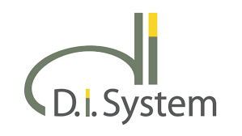
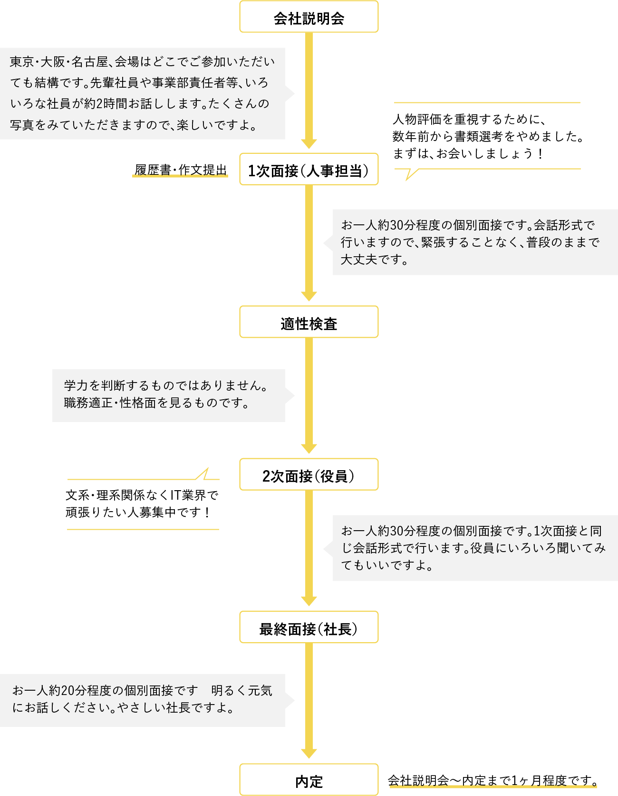

Cumpany Page

会社概要
| 会社名 | 株式会社ディ・アイ・システム |
|---|---|
| 設立 | 1997年11月5日 |
| 従業員数 |
723名（契約社員含む） ※2023年10月現在 |
| 事業内容 |
|
| 所在地 |
東京本社 〒164-0001 東京都中野区中野4-10-1 中野セントラルパークイースト2F Tel：03-5318-6940 Fax：03-5318-6942 大阪事業所 〒530-0005 大阪府大阪市北区中之島3-6-32 ダイビル本館17F Tel.06-4400-6164 Fax.06-4400-6174 名古屋支店 〒460-0003 愛知県名古屋市中区錦2-13-30 名古屋伏見ビル4F Tel:052-990-6100 Fax:052-990-6101 横浜サテライトオフィス 〒220-0012 神奈川県横浜市西区みなとみらい4-4-2 横浜ブルーアベニュー12F Tel：045-274-1624 Fax：045-274-8006 静岡サテライトオフィス 〒420-0858 静岡県静岡市葵区伝馬町9-11 原科ビル4A Tel：054-251-3150 Fax：054-204-8682 福岡サテライトオフィス 〒812-0012 福岡県福岡市博多区博多駅中央街8-1 JRJP博多ビル3F Tel：092-686-8749 Fax：092-686-8761 |
経営理念
私たちには夢があります… 可能性を信じた夢があります。
1960年代、米ソ冷戦で混迷するアメリカには2人の勇敢なるリーダーがいました。
1人は第35代アメリカ合衆国大統領ジョン・F・ケネディです。
「市民諸君」で始まる大統領演説は、
And so, my fellow Americans: ask not what your country can do for you,
ask what you can do for your country.
My fellow citizens of the world: ask not what America will do for you,
but what together we can do for the Freedom of man…
で最高潮に達し、以後大衆より絶大なる人気を受けることとなりました。
もう1人はアメリカ公民権運動の指導者、マーティン・R・キング牧師です。
ワシントン広場での演説で彼は、I have a dream… と多くの聴衆の前で語り始めました。
彼は、この演説で多くのアメリカ国民に影響を与え、
その結果、1964年7月に新公民権法成立、後にノーベル平和賞を受賞しました。
私達は1997年11月、コンピュータ関連業務を通じて無限の夢を創造する、無限の夢を実現する組織を標榜し設立しました。
私達はまさにケネディが語った会社が社員に何をしてくれるかではなく、社員が社会に何ができるか、
1人の人間として社会に立向っていける人たちの集団でありたいと考えます。
キング牧師が僅か数人でスタートした人種差別に対する首都ワシントンへの抗議行進が、
多くの賛同者のもと、数十万人へとふくれあがり、やがて大きなうねりとなり、多くの人達の夢を実現させたように、
私達もスタートは僅かな仲間から始めました。
私達には夢があります… 可能性を信じた夢があります！
日々進歩するコンピュータ関連テクノロジー、
その中で最新のテクノロジーを習得しながら現場の仕事を処理しているコンピュータ関連エンジニア。
おのずから限界があるものです。
私達はその様なエンジニアたちにエールをおくるものです。
私達は、それぞれの夢実現とそれに伴う社会的貢献のできる多くの仲間たちに囲まれたコミュニティを、
コンピュータテクノロジーを通じて実現していこうと考えています。
代表取締役
長田 光博
株式会社ディ・アイ・システムの魅力
- ワークライフバランスの実現で高いモチベーションを保てる。
- 朝の掃除は役員や部長も参加！垣根のないフラットな環境。
- 大手企業との取引多数！伸び盛りの成長企業で自身も成長！
社員の平均残業時間は月11時間程度。1日30分程度とムリなく働け、仕事 終わりに仲間と飲みに行ったり、趣味や習い事をするなど、プライベートの時間を確保できます。有給休暇 も気兼ねなく取得でき、有給消化率は75％！実際に帰省や旅行、資格取得の勉強など、計画的に休暇を過ごして いますよ。他にも育休・産休制度や、受講料を負担してくれる資格取得制度、資格手当等、社内制度が充実！社 員の成長を全力でサポート。産休・育休後に復帰したエンジニアが活躍しているのも、充実した制度が整っているからです。
20代の若手を中心に幅広い年代のスタッフが活躍している当社。社内の風通しが良く、上司や役職者を「○○さん」と呼んでいる ほど。誰にでも声をかけやすく、社員と上司・役職者へも気軽に仕事の相談や悩みなどを話せる距離の近さも特長です。例えば、 曜日ごとに各部門が担当している「朝の掃除」や「夕方のゴミ回収」は全員で対応。キレイで気持ち良い社内環境をつくるため、 全社員が一丸となって取り組んでいます。他にもフットサルや24時間リレーマラソン、飲み会など社内イベントも豊富。年次・役 職の垣根を越え、フラットにコミュニケーションがとれるので、自然と一体感が生まれています。
1997年の設立以来、ソフトウェア開発からネットワーク、情報セキュリティ関連に至るまで幅広いソリューションビジネスを提供し ている私たち。高い技術力と人間力を武器に様々な案件を手掛け、大手通信キャリアなどより多大な信頼を頂いています。その結果、 設立時たった3名だった社員も今では679名、目覚ましいの発展の背景には、キャリアに関係なく社員が様々なことにチャレンジでき る環境や充実の研修制度が整っているから。成長できるチャンスはたくさんあります。あなたの『やりたい』を当社で発揮してください。
採用情報
情報システムの設計・開発、ネットワークインフラの設計・構築、エンジニアを育成するためのIT教育など、幅広く 業務をおこなう当社では、一緒に働く仲間を募集しています。新たなチャレンジの場を求めている方は、ぜひ採用に ご応募ください。
望む人材
ＩＴ業界向けの教育・研修を行う部門があり、内定者研修から新入社員研修までを体系立てて指導させて頂きますが、 本人に学ぼうという意欲がなければ身につきません。逆に学ぼうという意欲のある方には、多くの知識・技術を提供 する環境があります。ＩＴ業界は一生勉強です。ＩＴの事が好きで学びたいという方を応援・募集します。
採用フロー
